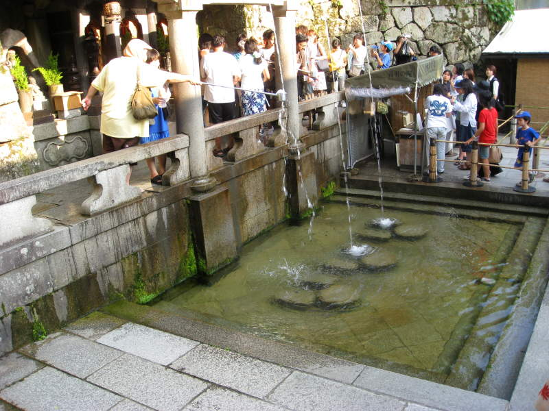

Our main plan in Kyoto was to go to a fancy restaurant, and also do random sightseeing. Most of the sightseeing in Kyoto was temples. Kyoto is rich with cultural heritage. It was the capital of Japan. Too bad most of the temples burned down multiple times. Multiple times you wonder? Japan likes to build from scratch. When you buy a new home, they destroy the home, then you buy the land and build the house. Unfortunately, they destroy and rebuild temples as well. Maybe it helps keep unemployment down. Who knows. We were in agreement that reading that a "400 year old temple" had been rebuilt 250, 150, and 50 years ago did take away a bit of its mystique. Anyway, this picture is from a Japanese garden we visited, adjacent to a temple. Everything was beautifully designed, but a grumpy French tourist still complained about the 5 dollar admission fee and stormed off. We proceeded to have a discussion amongst ourselves on who the world's worst tourists are. According to some study quoted, the French were, but #2 was the Americans. I don't like being thought of as a bad tourist!
The walls in Kyoto oozed with Japanese tradition.
Kyoto has no lack of chlorophyll.
Fish in Kyoto were very ravenous. I feared the one in the middle might jump out and chomp on my nose.
Me abusing one of these fish with my photography.
You can see Kyoto Tower in the distance. Lily pads float over the pond during this peaceful summer day.
Rippling water, gracefully manicured trees and a small waterfall give a tea house an enchanting backdrop. Hmm... maybe I should go into real estate sales.
This picture reminds me of a Claude Monet painting. You can probably figure out which.
Footbridges were always positioned with the surrounding scenery in mind. They'd be beautiful to see from a distance, and those on the footbridge would be treated to a wonderful view as well. Sometimes the footbridge on its own is impressive.
A busy uphill street in Kyoto. Good for the calves.
This simple Shinto shrine with the single candy cane rope caught my attention. The idea is, you pull the rope and you pray for something while the bell rings.
These temples and shrines we visited were both Buddhist and Shinto. They coexist very well in Japan.
Hungry stone beasts stare at you. They can't stop you though, because they're statues.
We passed by very intricate shrines in Kyoto. This actually reminds me of another shrine I saw in Tokyo. Different color though.
A large temple with another rope and bell.
This shrine reminds me of a mexican with a sombrero.
Some buildings looked very attractive and fit in very well, but we had no idea what they were for.
Those white lamps must look very impressive when they're lit at night. During the day though, they look like rows of shark teeth.
This roof demonstrates the two main roof shapes I've been seeing. There was the triangular shape in the back, with the tapered corners. There was also the bell-shaped arch in the front.
This shrine has multiple ropes. You can ring whichever bell you're willing to wait for. This is our first few of Chiemi, our friend Jay's girlfriend. Jay was stationed out in Okinawa for 4 years, and that's when he met her. Here she demonstrates praying at the shrine.
Another bright orange archway, this one being across a busy street.
I wouldn't have minded hitting my head on these paper lanterns. I probably hit my head, much more painfully, once for each of these lanterns. There, I just counted them. It's not far off.

We weren't quite ready to cook anything, but I'm sure she only would have accepted cash anyway. You can only carry around so much at once.
This was an elaborate entrance to even more temples. It was also something to take your mind off all those stairs. This was important, because I was still having traumatic Mt. Fuji flashbacks at this time.
Me in the archway!
Some of the statues had very intimidating expressions.
Here's another shot with Kyoto Tower in the distance. It's a fairly short tower, but it has a very distinctive shape.
Here was a big post people were trying to lift up. I'm not sure why. I just know it was heavy. These people couldn't lift it, but Jay and Miller teamed up and hoisted the thing up briefly together. Everyone in the vicinity watched in amazement.
The blue sky and orange temple look wonderful together they are the New York Mets colors!

An even father shot of Kyoto Tower, with a temple looming over the forest.
Me, Miller, Paul, and Jay. I think out of all my pictures, Miller looks best in this one. He's also wearing a shirt showing a goth version of the Powerpuff Girls, a popular cartoon show where three little girls foil the evil plans of Mojo-jojo, an equally evil monkey with a glass dome over his brain, so you can see it.
Jay and his girlfriend Chiemi look like a nice couple. Here they pose for someone else, and I take a picture for my own diabolical scheme (posting it here) anyway.

Every so often we pass a Shinto handwashing shrine. This water was falling from the mountains high above and, at the time, looked very refreshing. They were selling bottles you could store the icy water in for later consumption. Shinto handwashing shrines were very common.
More lilypads over glassy water.
Do not try to walk on these lily pads. Tiny creatures only.
In one Buddhist temple, we see the famous Karesansui garden in the Ryōan-ji Temple. I'm not sure why it's famous, but it definitely looks like a traditional rock garden to me. There's actually an evolution of rock gardens. They started out very simple, such as this one. The more elaborate rock gardens can actually have trees and flowers. I learned this at the Morikami Japanese Garden in Miami. They actually have examples of three different stages of rock gardens. In respect to the artform and tradition, I spent some meditative moments staring at the rocks here. There are many ideas suggested as to what these rocks mean. My meditation let me draw my own ideas, which I promptly forgot.
Not every lawn needs plush grass. Sometimes moss looks better.
A small shrine on a small island in a small pond.

Very traditional Japanese architecture. I wonder how long a building like this lasts, and what sort of maintenance it requires.
You learn to appreciate the beauty of these shrines very quickly. Especially when they provide shade from the hot sun.
If you have found this statue hidden in the foliage, then perhaps you have found inner peace.
Pink flora decorates lily pads which decorates the pond which decorates my picture.
Another simple rock garden.
There were plenty of places to toss your yen at. It was fun to try to get it in the bowl. I think if you do get it in the bowl, your wish comes true. Chiemi was pretty good at this. I tried once and was happy when my coin fell in the bowl too.
I have trouble telling sometimes if it's a well, or a bell. I think I see a bell and rope in there though. Definitely a bell.
Behold the temple of the golden chicken!
Here's a close-up of the solid-gold poultry.
This was the humblest shrine of them all. I wonder if that red thing at the top lights up when you score a goal like in hockey.
A small sprinkler sits in front of a massive two-layer entrance to something.
This is another handwashing station. I made sure to wash my hands here because I believe in the power of dragon-drool.
Here's another bird hiding from people on his scenic little retreat.
We saw buildings with funky designs like this one on the bus-ride to the fancy restaurant we were going to next.
Back